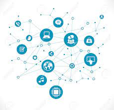
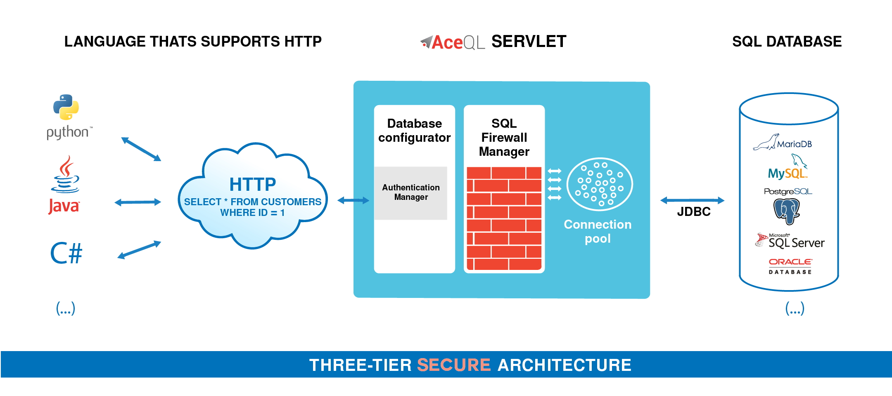

Evolution of Internet &
Basic Networking Concepts
In 1876 Alexander Graham Bell came forward with the concept of communication through telephone lines leading to
development of Public Switched Telephone Network (PSTN) in 1877. It opened the new frontiers allowing several
homes to connect through telephone lines.From that time, communication was mainly through telephone lines. In
the late 1950s, all the military communications
started using telephone network setting up dedicated connections between the two parties. This dedicated
connection made use of technology called circuit switching. The US Department of Defense realized the need to
connect geographically separated research computers together to form a network. This led to the development of
Advanced Research Projects Agency Network (ARPANET) in 1969. Need for communication between various
heterogeneous networks led to the development of TCP/IP (Transmission Control Protocol/Internet Protocol) in
1970. Along with several smaller networks, another large network called NSFNET was developed in 1984. When
ARPANET and NSFNET were interconnected, the network growth increased tremendously. TCP/ IP protocol (rules for
communication) acted as a glue to connect various heterogeneous networks together into a single network. This
wide network is an Internet (network of networks). The Internet is a global network that comprises many
voluntarily interconnected networks. It operates without a central governing body. The standardization of the
core protocols (IPv4 and IPv6) is an activity of the Internet Engineering Task Force (IETF), To maintain
interoperability, the principal name spaces of the Internet are administered by the Internet Corporation for
Assigned Names and Numbers (ICANN). ICANN coordinates the assignment of unique identifiers for use on the
Internet, including domain names, Internet Protocol (IP) addresses and many other parameters. Several government
and private organizations, collectively called Internet Service Providers (ISPs) joined hands to provide
connectivity for the Internet.
all the military communications
started using telephone network setting up dedicated connections between the two parties. This dedicated
connection made use of technology called circuit switching. The US Department of Defense realized the need to
connect geographically separated research computers together to form a network. This led to the development of
Advanced Research Projects Agency Network (ARPANET) in 1969. Need for communication between various
heterogeneous networks led to the development of TCP/IP (Transmission Control Protocol/Internet Protocol) in
1970. Along with several smaller networks, another large network called NSFNET was developed in 1984. When
ARPANET and NSFNET were interconnected, the network growth increased tremendously. TCP/ IP protocol (rules for
communication) acted as a glue to connect various heterogeneous networks together into a single network. This
wide network is an Internet (network of networks). The Internet is a global network that comprises many
voluntarily interconnected networks. It operates without a central governing body. The standardization of the
core protocols (IPv4 and IPv6) is an activity of the Internet Engineering Task Force (IETF), To maintain
interoperability, the principal name spaces of the Internet are administered by the Internet Corporation for
Assigned Names and Numbers (ICANN). ICANN coordinates the assignment of unique identifiers for use on the
Internet, including domain names, Internet Protocol (IP) addresses and many other parameters. Several government
and private organizations, collectively called Internet Service Providers (ISPs) joined hands to provide
connectivity for the Internet.
Basic Networking Concepts
A network is any collection of independent computers that communicate with one another over a shared
network medium.
Need for Networking
Computer networks can be used as means of resource sharing and communication.
- Resource Sharing
Connecting computers through networking allows us to share hardware and software resources.
Examples of hardware resources include peripherals (for example, printers and scanners), CPU, and
memory.Examples of software resources include system and application software, and files that may include
text, audio, and video content.
- Communication
Connecting computers through a network facilitates exchange
of information amongst the nodes in the network. For
example, any of the
computer systems in Figure 1.1 may send data to any of the three computer
systems or the printer, as it is connected to every node in the network. Creation
of a network requires various network devices such as modems, routers,
switches, and bridges, each of which plays a specific role in the network.
Networks differ on the basis of transmission media used, arrangement of nodes
in the network, their geographical span, and their purpose.
- Access to remote databases

It is easy for an average person to access any remote database, say for example airline
reservations and thereby book tickets. Likewise databases of trains, online universities, hotels etc can be
accessed as
per the requirement. Remote-control/access programs can be used to
troubleshoot problems or show new users how to perform a task.
Requirements of a network
Every network includes:
◉ At least two computers- Server or Client workstation.
◉ Network Interface Cards (NIC) A connection medium, usually
a wire or cable, although wireless communication between networked computers and peripherals is also possible.
◉ Network Operating system software ,such as Microsoft
Windows NT or 2000,Novell NetWare, Unix and Linux.